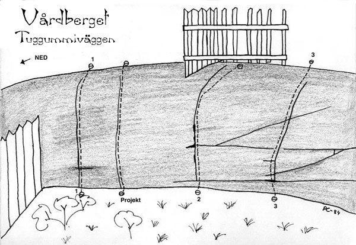
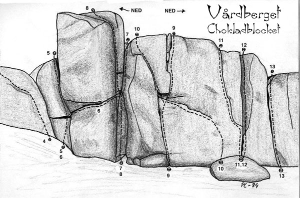

Vårdberget, Hälsingland
Lat: 61.21076646377241
Long: 17.13369369506836
Allmänt
Vårdberget ligger mitt i Ljusne samhälle 13 km från Söderhamn.
Kommunikationer
Historik
Väggar
Tuggummiblocket

Räknat från vänster:
{|
| width=200 |
- 1
- Doublemint
- ?
- Klart svår.
- 2
- Spearmint
- ?
- Relativt lätt.
- 3
- Juicy Fruity
- ?
- Något svårare.
Chokladblocket

För att komma till Chokladblocket, följer man staketet bortåt tills det viker av mot toppen. Härifrån går man i riktning mot den stora fabriken i kustbandet tills fabriken försvinner bakom trädtopparna, då ser man ett spetsigt flyttblock nedanför sig och när man här viker runt ett hörn, dyker Chokladblockets vägg upp. Lederna här varierar i längd mellan 5 och 7 m.
{|
|- valign="top"
| width=200 |
- 4
- Japp
- ?
- Kort väggtur i vinkel mot Chokladblocket till vänster.
- 5
- Mjölkchoko
- ?
- Grund kamin med en handspricka i hörnet. Lätt.
- 6
- Choco
- ?
- Tydlig traverspricka under ett tak.
- 7
- Geisha
- ?
- Den tydliga kaminen med utsteg åt höger. Lätt.
- 8
- Fazer
- ?
- Det vänstra diederutsteget ur kaminen.
- 9
- Schweizernöt
- ?
- Den första tydliga sprickan till höger om kaminen. Relativt svår.

- 10
- Helnöt
- ?
- Fem m travers in från höger till "Schweizernöt". Börjar ända borta vid sprickan till höger om "Schweizernöt". Man kliver in från ett flyttblock och traverserar diagonalt upp mot nischen mitt på "Schweizernöt". Känslig.
- 11
- Snickers
- ?
- Tunn spricka rakt ovanför insteget på "Helnöt". Vass.
- 12
- Raider
- ?
- Det grunda hörnet till höger om "Snickers". Medelsvår
- 13
- Bounty
- ?
- Tydlig lay-back spricka till höger om det grunda hörnet som utgör "Raider" Relativt lätt.
Vattencisternen
[[Bild:Heaven.jpg|thumb|300px|right|Claes Jelinek toppar Heaven Up Here (6), Ljusne, 1983.
Foto: Per Calleberg]]
På bergets topp, mot samhället till, finns en stor vattencistern. Gå 15 m från vattencisternen mot en telefonstolpe och i riktning ett gult hyreshus. Ett av stagen på telefonstolpen är förankrat med en stor bult som går att använda som firningsbult vid nedfirning till lederna på nordsidan av berget. Man firar då rakt över "Heaven up here". Om man inte vill fira ned kan man gå ned till vänster längs en ramp.
- 14
- Heaven up here
- 6
- Vägg med 70 graders lutning nedanför ovan nämnda telefonstolpe. Väggtur med små grepp och steg. Leden har inte letts, då den är helt osäkrad.
- 15
- Manacle
- 5-
- Om man från insteget från "Heaven up here" följer nederkanten på väggen åt vänster ut mot havet, kommer man efter ca 100 m till ett kort dieder.
- 16
- Örnnäsan
- 4
- Ännu längre åt vänster (ca 50 m), nedanför ett trästaket, ligger en liten ravinformation. På ravinens högra vägg finns denna led. Följer en tydlig arete förbi ett litet tak.
- 17
- Alaväggen
- 5-
- Ligger strax till vänster om "Örnnäsan".
- 18
- Mycke stånk
- 4+
- Runt hörnet, till höger om "Örnnäsan", finns en annan vägg. Tydlig spricka på en relativt brant vägg. Leder upp till en gran.
Kategori:Hälsingland
Kategori:Trad
Kategori:Hälsingland
Copyright (C) Permission is granted to copy, distribute and/or modify this document under the terms of the GNU Free Documentation License, Version 1.3